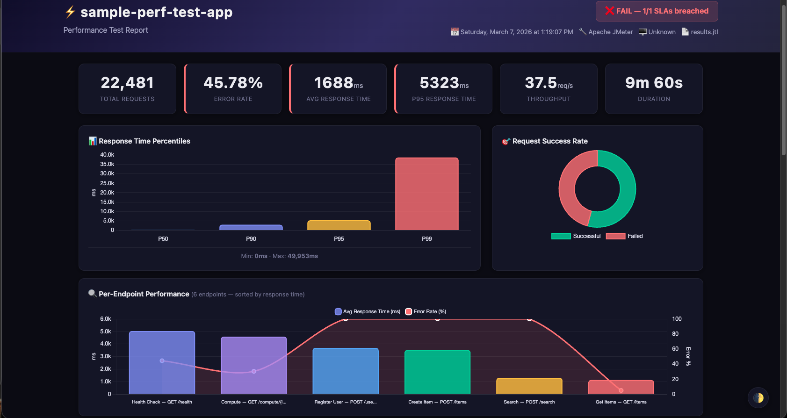
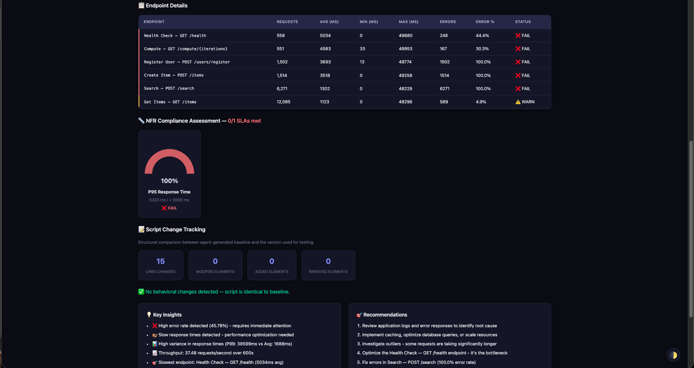
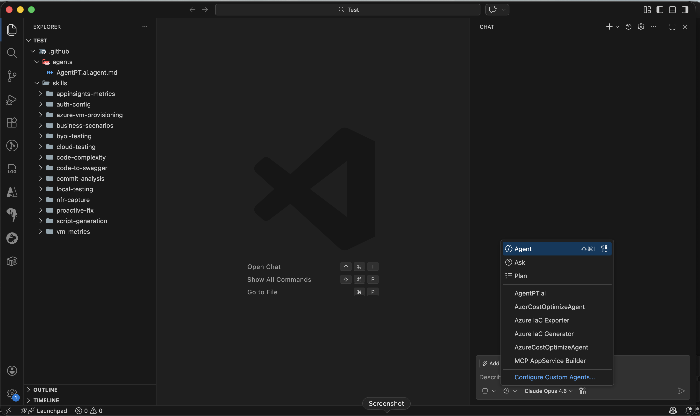

Two testing modes — Business Scenarios for multi-step user journeys and Individual API Testing for endpoint-level load — plus NFR capture, smart recommendations, code analysis, and more. All from GitHub Copilot Chat. No API keys needed.
npm install -g @performance-agent/mcp-server
Choose the right approach for your load testing needs — test full user journeys or stress individual endpoints. Both support CSV/Excel template upload or interactive Q&A.
Multi-step user journeys with correlation between steps
Test each endpoint independently with its own RPS or Concurrent User %
Both modes support 6 test types (baseline, load, stress, spike, soak, capacity), JMeter & k6, and all 6 execution modes (local, cloud, distributed, BYOI, distributed BYOI, Azure Load Testing).
A complete developer toolkit that lives inside your IDE — from NFR capture to distributed load testing with smart recommendations
Capture Non-Functional Requirements before generating test scripts. Defines the SLAs, concurrency targets, and error budgets that drive load profiles, assertions, and pass/fail verdicts across the entire pipeline.
.perf-output/nfr/ — consumed by script gen, Smart Advisor, and result analysisAI-powered analysis of your test scripts to recommend optimal infrastructure. Calculates VM sizing, agent count, and cost estimates based on workload math — not guesswork.
AI-powered analysis of your last commit for code quality and performance anti-patterns. Works for any language — Python, Go, Java, C#, TypeScript, Rust, and more.
Multi-language static analysis engine that computes cyclomatic complexity, cognitive complexity, nesting depth, time complexity, and maintainability index per method. Supports Python, TypeScript, JavaScript, Go, Java, and C#/.NET.
Generate OpenAPI 3.0 specs from your source code. Agent-powered semantic analysis — works for any language. No separate API key required, works fully offline.
Create JMeter JMX and k6 JavaScript test scripts from OpenAPI/Swagger specs with two testing modes — Business Scenarios and Individual API — plus 6 test types, auto-correlation, and App Insights integration.
Run tests locally or provision Azure VMs from natural language. Full automation from provisioning to teardown — a single chat command.
Pre-flight check using the same test script with intelligent JMX overrides. Patches all thread groups to 1 thread and 2 iterations, disables throughput timers and schedulers, then restores the original script automatically. Validates connectivity, auth tokens, and endpoint health before committing to a full test run.
authconfig.json and injects into scriptComprehensive reports with response times, throughput, error rates, correlated Azure VM metrics, and full end-to-end tracing — client-side JMeter/k6 results automatically correlated with server-side Application Insights telemetry.
After every test run, automatically generates two reports — a rich interactive HTML dashboard with Chart.js visualizations that opens in your browser, plus a comprehensive Markdown report for VS Code, GitHub PRs, and Confluence. Both are fully self-contained with zero external dependencies.
.perf-output/reports/Structural fingerprinting compares the agent-generated JMX baseline against the version used for testing. Detects exactly which elements were added, removed, or modified. Unfoolable — whitespace, comments, and formatting are ignored.
.perf-output/tracking/Master-slave architecture for heavy workloads. Provisions 1 master + N slave VMs in a shared VNet, installs JMeter, runs distributed tests, and downloads results — all from a single chat command.
Already have VMs or bare-metal servers? Run JMeter tests on any machine you can SSH into — single-VM or distributed across multiple slaves. Provide host, user, and key to get started.
Connect directly to Azure API Management to discover and export API specs. Interactive 5-step flow — select subscription, resource group, APIM instance, and API — then export the OpenAPI spec for instant test generation. Also parses local APIM exports and raw HTTP requests.
Run performance tests on Azure Load Testing — a fully managed service with no VMs to provision. Upload JMX scripts, execute at scale, and get detailed per-API results with automatic ZIP extraction and JTL parsing.
Automated 3-step workflow for API authentication. Analyze your OpenAPI spec for auth requirements, generate authconfig.json with OAuth2 client_credentials or ROPC support, and validate completeness — all before running a single test.
authconfig.json with token endpoint & credentialsOne command to verify your entire environment. Detects tools, validates Azure identity & RBAC roles, inspects subscriptions, resource groups, and registered providers — then tells you exactly what’s ready and what’s missing.
Every test run auto-generates a stunning, self-contained HTML dashboard with Chart.js visualizations — dark/light theme toggle, response time charts, per-endpoint breakdown, and error analysis. Opens automatically in your browser.


Prioritized features shaping the future of Performance Agent — organized by impact and effort
Live discovery of Azure API Management instances with 5-step interactive flow. Export OpenAPI specs directly from APIM, parse local exports, and detect rate-limit/auth/caching policies.
Fully managed performance testing via Azure Load Testing service. Create resources, upload JMX, execute tests at scale, auto-extract ZIP results with per-sampler breakdown, and resource reuse.
Automated 3-tool workflow: detect auth requirements from Swagger, generate authconfig.json with OAuth2/ROPC support, and validate completeness before test execution.
Server-side metrics via KQL — per-endpoint latency, dependency calls, exceptions, and CPU/memory pressure. Client vs server comparison for full end-to-end correlation.
Instrument the MCP server to track tool call counts, success/failure rates, latencies, most-used tools, and user flow patterns. Enables data-driven product decisions and helps identify the most impactful next features.
Add Python Locust as a third test engine alongside JMeter and k6. Requires a new generator, executor path, and result parser for Locust’s CSV output. Popular in Python shops — expands reach beyond JMeter/k6.
Native support for Azure Kubernetes Service and Azure Container Apps as test targets. Auto-discover endpoints, correlate pod-level metrics, and scale test infra alongside your workloads.
From commit to confidence — a complete workflow powered by NFR-driven testing, all from Copilot Chat
Commit as usual, then ask the agent to analyze your diff. It detects performance smells ([PERF]: N+1 queries, await-in-loop, missing caching) and architecture violations ([ARCH]: SRP violations, god classes, circular deps) across any language. Automatically runs cyclomatic & cognitive complexity analysis on changed files. Offers one-click auto-fix patches for every issue found.
Start by pointing the agent to your Swagger/OpenAPI spec. It auto-discovers specs in your workspace. No spec? The agent generates one from your source code using AI-powered semantic analysis — extracts routes, models, auth patterns, and validation rules from any framework. You can also fetch specs live from Azure API Management via the APIM integration (subscription → resource group → APIM instance → API).
Pick one of two modes: Business Scenarios — multi-step user journeys (Browse → View → Purchase) with correlation between steps, or Individual API Testing — test each endpoint independently with its own RPS or concurrent-user share. Upload a CSV/Excel template to skip manual Q&A entirely.
Define your non-functional requirements — concurrency targets, response time SLAs (p95/p99), throughput, error rate budget, and test duration. Then choose from 6 test types: baseline, load, stress, spike, soak/endurance, or capacity. NFR values drive the load profile, assertions, and pass/fail verdicts downstream.
The agent generates JMeter (.jmx) or k6 (.js) scripts with NFR-driven enhancements — duration assertions, auto-correlation (POST → GET/PUT/DELETE chain extraction), think times, optional App Insights BackendListener, and a complete ASCII tree of every element. Scripts are automatically sanitized and validated before use.
Before execution, the agent deep-analyzes your test script — thread counts, sampler complexity, write ratio, payload sizes, SSL usage — and calculates the optimal infrastructure. It also runs structural fingerprinting to compare the current script against the agent-generated baseline, showing exactly what was modified (and ignoring cosmetic changes like whitespace or comments).
Agent asks: “Would you like to run a quick sanity test locally first?” If yes — runs the same script with 1 thread and 2 iterations (~15 sec). Checks connectivity, auth tokens, and endpoint health. If sanity passes, proceeds to full test. If it fails, shows per-endpoint results and actionable fixes.
Run locally, on a single Azure VM, across a distributed master-slave cluster, on your own infrastructure via SSH (single or distributed BYOI), or on Azure Load Testing (fully managed, no VMs needed) — all from a single chat command. Auth is auto-handled via authconfig.json when configured.
Get comprehensive analysis with p50/p90/p95/p99 percentiles, per-endpoint breakdown, throughput, and error rates. Automatically generates a downloadable Markdown report with NFR pass/fail verdicts, infrastructure utilization, App Insights client-vs-server comparison, agent-vs-manual script change tracking, and actionable recommendations. Saved to .perf-output/reports/.
When tests reveal slow endpoints (p95 > SLA), the agent searches your source code for root causes — N+1 queries, await-in-loop, missing caching — applies targeted fixes with your approval, re-runs the test, and shows before/after improvement. Reuse existing clusters for instant re-runs.
Platform-specific packages — each includes the native binary for your OS. No Node.js required at runtime.
| File | Size | Downloads | |
|---|---|---|---|
| Loading releases... | |||
Loading release history...
.vsix for your platform above
# macOS Apple Silicon
code --install-extension performance-agent-2.0.0-darwin-arm64.vsix
# macOS Intel
code --install-extension performance-agent-2.0.0-darwin-x64.vsix
# Windows x64
code --install-extension performance-agent-2.0.0-win32-x64.vsix
# Linux x64
code --install-extension performance-agent-2.0.0-linux-x64.vsix.github/agents/ and 14 skill files at .github/skills/ in your workspace
Visual Guide: Click the dropdown → select AgentPT.ai → confirmed at bottom

🔍 Click to enlarge.github/agents/ and .github/skills/ directories.
35 tools available through GitHub Copilot Agent Mode
captureNFR
New
.perf-output/nfr/ and consumed by script generation, Smart Advisor, and result analysis for pass/fail verdicts.
captureBusinessScenarios
New
generatePerfScript
prepareJMXForTest
prepareK6ForTest
collectCodeForSwagger
generateSwaggerFromCode
collectCommitForAnalysis
analyzeCodeComplexity
runLocalPerformanceTest
checkLocalToolAvailability
runSanityTest
New
checkSetupReadiness
New
provisionAzureVM
listAzureSubscriptions
setAzureSubscription
listAzureResourceGroups
runCloudPerformanceTest
getCloudTestRecommendation
runDistributedPerformanceTest
runTestOnExistingVM
runDistributedBYOITest
cleanupAzureResources
analyzeTestResults
getVMMetrics
getAppInsightsMetrics
New
listAPIMInstances
New
fetchSwaggerFromAPIM
New
analyzeSwaggerAuth
New
createAuthConfig
New
authconfig.json file with OAuth2 client_credentials or ROPC flow configuration. Includes token endpoint, client ID/secret placeholders, scopes, and grant type. Used by all execution modes for automatic token management.
validateAuthConfig
New
authconfig.json is complete and correctly configured before test execution. Checks required fields, token endpoint reachability, and credential format. Prevents auth failures during expensive cloud test runs.
createALTTest
New
runALTTest
New
cleanupALTResources
New
checkJMXChanges
Use natural language like "Create a large Ubuntu VM in East US" and the agent picks the right size.
| Preset | Azure Size | CPUs | RAM | Best For |
|---|---|---|---|---|
| small | Standard_B1ms |
1 | 2 GB | Testing, dev |
| medium | Standard_D2s_v3 |
2 | 8 GB | General purpose |
| large | Standard_D4s_v3 |
4 | 16 GB | Production loads |
| xlarge | Standard_D8s_v3 |
8 | 32 GB | High performance |
| compute | Standard_F4s_v2 |
4 | 8 GB | CPU-intensive |
| memory | Standard_E4s_v3 |
4 | 32 GB | Databases, caches |
| gpu | Standard_NC6s_v3 |
6 | 112 GB | ML, AI |
Three ways to get started with Performance Agent
Required for all functionality
For running tests on your machine
Required for single-VM, distributed, and cloud-based test execution
# Install Azure CLI
# macOS
brew install azure-cli
# Windows (PowerShell)
winget install Microsoft.AzureCLI
# Linux (Ubuntu/Debian)
curl -sL https://aka.ms/InstallAzureCLIDeb | sudo bash
# Login to Azure
az login
# Set your subscription (if you have multiple)
az account list --output table
az account set --subscription "Your-Subscription-Name"
# Verify login
az account show# Install Terraform
# macOS
brew install terraform
# Windows (PowerShell)
winget install Hashicorp.Terraform
# Linux (Ubuntu/Debian)
wget -O- https://apt.releases.hashicorp.com/gpg | sudo gpg --dearmor -o /usr/share/keyrings/hashicorp-archive-keyring.gpg
echo "deb [signed-by=/usr/share/keyrings/hashicorp-archive-keyring.gpg] https://apt.releases.hashicorp.com $(lsb_release -cs) main" | sudo tee /etc/apt/sources.list.d/hashicorp.list
sudo apt update && sudo apt install terraform
# Verify installation
terraform --versionFor running tests on your own servers via SSH
Supported Systems: Any Linux server (Ubuntu, Debian, RHEL, CentOS, Amazon Linux). The agent auto-detects the package manager and installs Java + JMeter if not present.
For git diff analysis, OpenAPI generation, and code quality checks
Install these to run performance tests locally without cloud infrastructure
# JMeter Installation
# macOS
brew install jmeter
# Linux
wget https://archive.apache.org/dist/jmeter/binaries/apache-jmeter-5.6.3.tgz
tar -xzf apache-jmeter-5.6.3.tgz
export PATH=$PATH:$(pwd)/apache-jmeter-5.6.3/bin
# Verify
jmeter --version
# ──────────────────────────────
# k6 Installation
# macOS
brew install k6
# Windows
winget install k6
# Linux (Debian/Ubuntu)
sudo gpg -k
sudo gpg --no-default-keyring --keyring /usr/share/keyrings/k6-archive-keyring.gpg --keyserver hkp://keyserver.ubuntu.com:80 --recv-keys C5AD17C747E3415A3642D57D77C6C491D6AC1D69
echo "deb [signed-by=/usr/share/keyrings/k6-archive-keyring.gpg] https://dl.k6.io/deb stable main" | sudo tee /etc/apt/sources.list.d/k6.list
sudo apt-get update && sudo apt-get install k6
# Verify
k6 version# Run these commands to verify your setup:
# Core
node --version # Should be 18+
code --version # Should be 1.95+
# Azure Cloud Testing
az --version # Should be 2.50+
az account show # Should show your subscription
terraform --version # Should be 1.5+
# Local Testing (at least one)
jmeter --version # Or: which jmeter
k6 version # Or: which k6
# Code Analysis
git --version # Required for commit analysisPlatform support: Windows, macOS, and Linux fully supported. All cloud features require Azure CLI login.
Common issues and solutions
.vscode/mcp.json exists with the correct absolute path to dist/index.jsnpm run build completed successfully and dist/index.js existscat swagger.json | jq .paths object exists and contains endpointsaz login then az account show.perf-output/terraform-logs/time_range: "6h"az vm show -g <rg> -n <name>threads=1 and ramp-up=0..perf-output/sanity/sanity-jmeter.log for errors.cd mcp-server && npm run buildaz loginfetchSwaggerFromAPIM in file mode, ensure the exported file is valid JSONMicrosoft.LoadTestService resource provider is registered: az provider register --namespace Microsoft.LoadTestServiceanalyzeSwaggerAuth first to detect the auth scheme from your OpenAPI specauthconfig.json has the correct token endpoint URL and grant typevalidateAuthConfig to check for missing or invalid fieldsCheck which tools you have installed and see your readiness score for each workflow. Select the tools available on your system to get a personalized readiness report.
checkSetupReadiness — MCP Tool
Run this check automatically from GitHub Copilot Chat. The tool performs a comprehensive real-time analysis of your entire environment in seconds:
Open Copilot Chat in VS Code and type any of these:
Choose the right execution mode for your workload — from local smoke tests to distributed load tests
Run JMeter or k6 on your machine. Zero setup if the tool is installed. Great for quick smoke tests and script validation.
Provision a single Azure VM, run the test, download results, and clean up. Fully automated via Terraform.
1 master VM + N slave VMs in a private VNet. JMeter distributed mode for heavy workloads (thousands of concurrent users).
Run tests on any machine you can SSH into — your own VMs, bare-metal servers, or any cloud provider. Supports single-VM and distributed master-slave execution.
Fully managed cloud performance testing — no VMs to provision, no Terraform needed. Upload your JMX script to Azure Load Testing, execute at scale, and download parsed results with per-API breakdown.
Built by developers, for developers. Have questions or feedback? Don’t hesitate to reach out to us.
Project Lead
Leading the Performance Agent initiative and providing strategic direction for the project.
sviswanathan@microsoft.comDeveloper
Building and shipping features under Smitha’s guidance — from code analysis to distributed load testing.
amanraj@microsoft.comDeveloper
Building and shipping features under Smitha’s guidance — from code analysis to distributed load testing.
vermaashi@microsoft.comIn case of any doubt, feel free to reach out to any of us — we’re happy to help!
Open source. NFR capture, business scenario modeling, smart recommendations, code & complexity analysis, OpenAPI generation, APIM integration, auth configuration, and performance testing — local, single-VM, distributed, BYOI, or Azure Load Testing. Windows, macOS, and Linux.
Already requested access? Enter your email to check if your download has been approved.
Fill out the form below, choose the version you want to test, and we’ll send you a downloadable link directly.